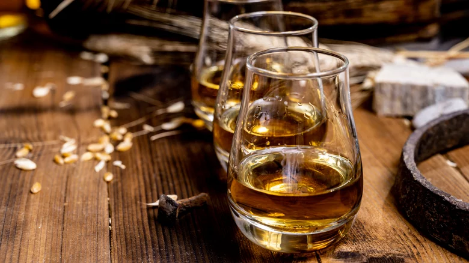
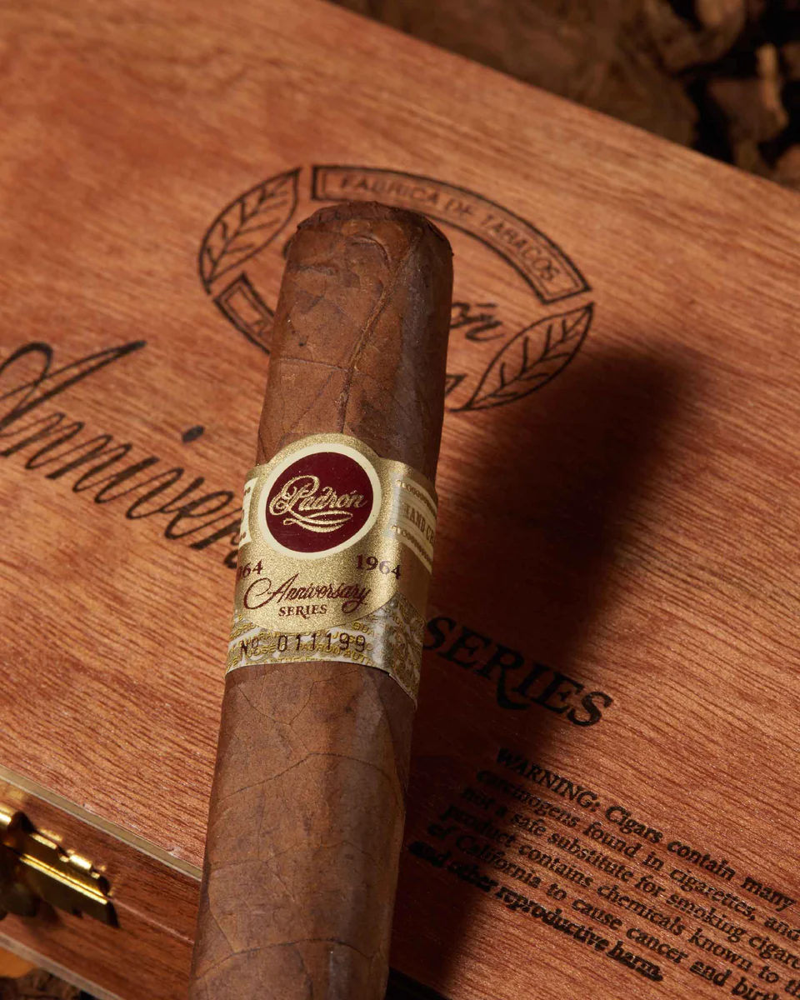

Single Malt and Blended Whisky

The art of blending has helped propel Japanese whisky to monumental success.
Ireland and Canada are also known for their blended whiskey.
But, the single-malt whiskies of Scotland are some of the most prized liquors in the world.
Padron 1964 Anniversary Series

Indulge in the timeless elegance and mastery of
the Padron 1964 Anniversary Series Maduro & Natural,
a medium to full-bodied box-pressed blend that commemorates
the company's remarkable 30-year journey. This
exquisite collection features the finest Sun Grown
Natural and Maduro wrappers, carefully chosen to
encapsulate the essence of luxury and sophistication.
{% endblock %}